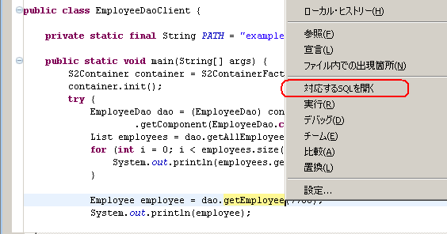
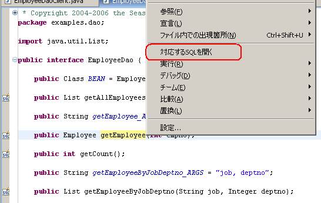
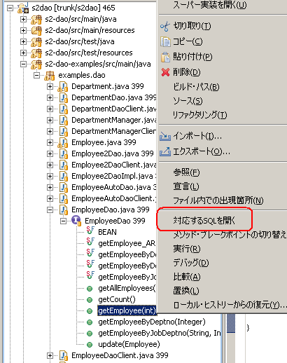
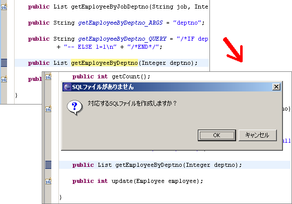
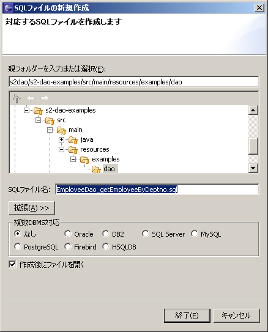

|
 |
|||||
使い方SQLファイルを開く
DAOの呼び出し元や、開いているDAOのインターフェースからSQLファイルを開くことができます。 メソッドを選択した場合はそのメソッドに対応するSQLファイルを、インターフェースを選択した場合はすべてのメソッドで対応する SQLファイルを開きます。複数DBMS対応を行っていてメソッドに対応するSQLファイルが複数ある場合は、それらすべてを開きます。
DAOの呼び出し元から開く場合
DAOの呼び出し元を開いてメソッドを選択し、コンテキストメニューから「対応するSQLを開く」をクリックします。 
DAOから開く場合
または、DAOを開いてメソッドを選択し、同じように「対応するSQLを開く」をクリックします。  パッケージエクスプローラー上でDAOのjavaファイルを選択することや、javaファイルを展開してメソッドを選択することでも SQLファイルを開くことができます。Java参照パースペクティブでも同じように使うことができます。
「パッケージエクスプローラ」から開く場合
Javaファイルを展開してメソッド、またはタイプを選択します。Javaファイルを選択した場合は、トップレベルのタイプを選択したことになります。  SQLファイルを作成する
SQLファイルを開こうとして対応するSQLファイルが存在しない場合は、SQLファイル作成用のウィザードを使って新規に作成する ことができます（ただし、メソッドを選択しているときのみ有効）。ファイル名や保存するフォルダは自動的に決定されるのでほとんどの場合変更する必要はありませんが、 複数DBMS対応を行いたいときは、使用するDBMSを選択するとファイル名にサフィックスが追加されます。   ポイント SQLファイルの保存先ディレクトリはどのように決まるのでしょうか。 プラグインは、DAOのパッケージ名から最もSQLファイルが多く存在するディレクトリを探し出します。 そのため、SQLファイルが1つもない状態だと常にDAOと同じソースフォルダのディレクトリに作成しようとします。 最初に作成するときだけ適当な保存先を選択してください。 SQLファイルのあるメソッドにマーカを付ける対応するSQLファイルのあるメソッドにマーカが付きます。S2Daoプラグインが有効になっている限り自動的に付くので何もする必要はありません。 |
||
| Copyright© 2004-2006, The Seasar Foundation and the others. All rights reserved. |